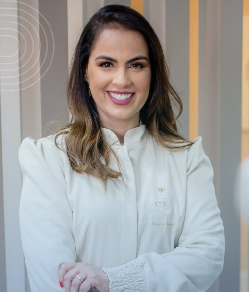

Atendimento humanizado
Cada etapa do procedimento é explicada com calma e clareza, para você entender exatamente o que está sendo feito.
A Dra. Belizane Martins Mucci recebe adultos e crianças com um atendimento humanizado, explicando cada etapa do tratamento com calma — do check-up de rotina ao clareamento dental.

Com mais de 25 anos dedicados à odontologia, a Dra. Belizane Martins Mucci (CRO-MG 68412) construiu em Viçosa um consultório pensado para o conforto e o bem-estar de cada paciente — dos pequenos aos mais experientes.
É referência em clareamento dental e mantém um cuidado especial com o atendimento humanizado: cada etapa do tratamento é explicada com clareza, para que o paciente entenda o que está sendo feito e se sinta seguro do início ao fim.
O ambiente moderno e acolhedor foi planejado para receber toda a família, unindo tecnologia atual a um acolhimento que faz diferença — inclusive no atendimento infantil.
Cada etapa do procedimento é explicada com calma e clareza, para você entender exatamente o que está sendo feito.
Consultório equipado com tecnologia atual para diagnósticos mais precisos e tratamentos mais confortáveis.
Um ambiente pensado para receber bem desde as crianças até os pacientes mais experientes, com o mesmo cuidado.
Mais de 25 anos de experiência em odontologia, com foco e resultado reconhecido em clareamento dental.
Protocolo de clareamento seguro e acompanhado de perto, a especialidade que mais destaca o trabalho da Dra. Belizane.
Atendimento lúdico e acolhedor para os pequenos, pensado para criar uma relação tranquila com o consultório desde cedo.
Profilaxia e acompanhamento periódico para manter a saúde bucal em dia e evitar problemas antes que apareçam.
Harmonização do sorriso com procedimentos estéticos planejados de acordo com as características de cada paciente.
Restaurações com técnica e materiais atuais, priorizando conforto, durabilidade e um resultado natural.
Consulta inicial completa para entender sua necessidade e montar um plano de tratamento claro, sem surpresas.
Depoimentos ilustrativos, inspirados em elogios recorrentes de pacientes reais — a substituir por avaliações reais antes da publicação.
Me senti acolhida desde a recepção. A Dra. Belizane explica cada passo do tratamento com muita paciência e clareza.
Mariana S.
Consultório limpo, moderno e um atendimento atencioso do início ao fim. Recomendo de olhos fechados.
Carlos H.
Levei meu filho pela primeira vez com receio e a experiência foi incrível — ele já pergunta quando vai voltar.
Fernanda O.
Fiz o clareamento e o resultado ficou natural. Todo o processo foi bem explicado e acompanhado de perto.
Juliana P.
Endereço
R. Dr. Milton Bandeira, 82 - Lj 2 - Centro, Viçosa - MG, 36570-172 Ver no Google Maps →Horário de atendimento
Fale agora pelo WhatsApp e agende sua consulta com a Dra. Belizane Martins Mucci em Viçosa - MG.
Falar no WhatsApp